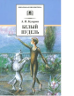

В сборник вошли замечательные рассказы известного русского писателя Александра Ивановича Куприна (1870-1938) о детях и животных: о побеге из казенного пансиона, о ночной ловле раков, о дворовом псе Барбосе и комнатной Жульке, об артистичном белом пуделе Арто и отважном мальчике Сергее, и многие другие. Для среднего школьного возраста.